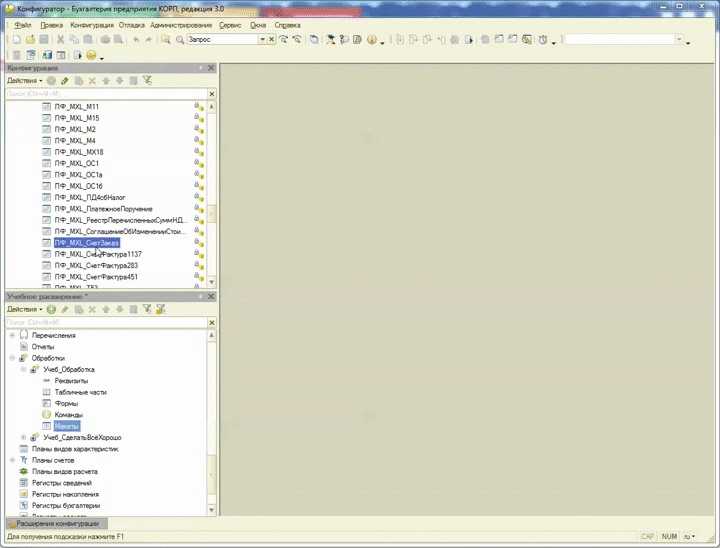

0. Введение
Механизм расширения конфигурации появился в платформе 8.3.6 и соответственно может применяться в конфигурациях с отключенной совместимостью. На текущий момент все типовые конфигурации на управляемых формах поддерживают работу с расширениями. Рассмотрим подробнее, что это за механизм.
Согласно документации:
"Механизм расширения конфигурации – это специальный механизм, предназначенный для доработки расширяемой конфигурации без изменения этой конфигурации (в том числе без снятия с поддержки).
Основное назначение расширения конфигурации – это доработка прикладного решения при внедрении (или в «облаке») под нужды клиента. При этом дорабатываемую конфигурацию не надо снимать с поддержки. В результате сохраняется простота обновления типового прикладного решения, стоящего на поддержке, с необходимостью выполнять доработки. При разработке расширения следует понимать некоторые особенности функционирования расширения конфигурации. Так, расширяемая конфигурация в любой момент может быть изменена, например, в результате обновления. При этом разработчик расширения не может никак повлиять на возможность или невозможность обновления. Также следует учитывать тот факт, что в системе могут функционировать более одного расширения и автор каждого расширения (в общем случае) не знает, как функционирует другое расширение."
Более подробно о расширениях можно почитать и посмотреть здесь:
Заметки в зазеркалье
Документация
Курсы Гилёва и Насипова
Нюансы расширений
Расширения в 8.3.9
Ниже я приведу полезные советы для работы с расширениями.
Возможно некоторые покажутся слишком простыми или очевидными, но они могут быть полезны тем, кто только начинает свою работу с расширениями.
Также с удовольствием дополню вашими советами из комментариев.
Итак, поехали!
1. Показать/скрыть неизмененные объекты
При добавлении новых объектов в расширение также автоматически добавляются связанные объекты. В результате в метаданных расширения скапливается много служебных объектов.
Для того, чтобы показать только измененные объекты есть кнопка “Измененные и добавленные в расширении”. При нажатии отображаются только добавленные вручную и измененные объекты расширения.
Принцип её работы показан ниже:
2. Последовательность выполнения обработчиков
Если в расширении переопределить событие или команду, то по умолчанию сначала выполняется обработчик из расширения, а затем обработчик типовой конфигурации.
Это не всегда удобно, например, когда какие-то операции следует выполнить после типовых обработчиков.
Рассмотрим примеры, которые позволяют изменить эту последовательность:
а) Выполнить сначала типовой код, затем код из расширения:
&НаСервере
Процедура Учеб_ПриСозданииНаСервере(Отказ, СтандартнаяОбработка)
ДополнительныеПараметры = Новый Структура;
ДополнительныеПараметры.Вставить("Сообщение", "ПослеТиповогоОбработчика!");
УстановитьВыполнениеПослеОбработчиковСобытия("ВыполнитьПослеТиповогоОбработчика", ДополнительныеПараметры);
КонецПроцедуры
&НаСервере
Процедура ВыполнитьПослеТиповогоОбработчика(Отказ, СтандартнаяОбработка, ДополнительныеПараметры)
Сообщить(ДополнительныеПараметры.Сообщение);
КонецПроцедуры
б) Выполнить сначала код из расширения, затем типовой код, затем опять код из расширения
&НаСервере
Процедура Учеб_ПриСозданииНаСервере(Отказ, СтандартнаяОбработка)
// Процедуры до типовых обработчиков
Сообщить("До типового обработчика!");
// Устанавливаем обработчик после типового обработчика событий
УстановитьВыполнениеПослеОбработчиковСобытия("ВыполнитьПослеТиповогоОбработчика");
// Дальше будет выполнен код из типового обработчика
КонецПроцедуры
&НаСервере
Процедура ВыполнитьПослеТиповогоОбработчика(Отказ, СтандартнаяОбработка, ДополнительныеПараметры)
// Код после типового обработчика из расширения
Сообщить("После типового обработчика!");
КонецПроцедуры
в) Выполнить сначала типовой код, затем код из расширения, затем снова типовой код
Можно прибегнуть к хитрости:
- Отменяем выполнение обработчиков из типовой конфигурации.
- В расширении вызываем нужные процедуры из типового кода в перемешку с процедурами из расширения.
&НаСервере
Процедура Учеб_ПриСозданииНаСервере(Отказ, СтандартнаяОбработка)
// Процедуры до типовых обработчиков
Сообщить("ДоТиповогоОбработчика!");
// Процедуры из типового обработчика
Если НЕ ЗначениеЗаполнено(БанковскийСчет.ВалютаДенежныхСредств) Тогда
БанковскийСчет.ВалютаДенежныхСредств = ОбщегоНазначенияБПВызовСервераПовтИсп.ПолучитьВалютуРегламентированногоУчета();
КонецЕсли;
РазместитьКонтактнуюИнформацию();
Если Параметры.Ключ.Пустая() Тогда
ПодготовитьФормуНаСервере();
КонецЕсли;
УправлениеФормой(ЭтаФорма);
// Процедуры после типовых обработчиков
Сообщить("ПослеТиповогоОбработчика!");
// Остановим выполнение типовых обработчиков
УстановитьВыполнениеОбработчиковСобытия(Ложь);
КонецПроцедуры
г) Отменить типовые обработчики
&НаСервере
Процедура Учеб_ПриСозданииНаСервере(Отказ, СтандартнаяОбработка)
// Остановим выполнение типовых обработчиков
УстановитьВыполнениеОбработчиковСобытия(Ложь);
КонецПроцедуры
3. Создание и использование общего модуля, модуля менеджера или модуля объекта
На текущий момент механизм расширений не позволяет создавать или заимствовать общие модули, модули менеджера и модули объектов. Но в обработке, включенной в состав конфигурации, доступен модуль менеджера и к нему можно обращаться:
&НаСервере
Процедура СообщитьДиректораНаСервере()
Должность = "Директор";
ФИОРуководителя = "Иванов И.И.";
Обработки.Учеб_Обработка.СообщитьДиректора(Должность, ФИОРуководителя);
КонецПроцедуры
Модуль менеджера обработки:
Процедура СообщитьДиректора(Знач Должность, Знач ФиоРуководителя) Экспорт
ТекстСообщения = СтрШаблон(
НСтр("ru='%1 %2'"),
Должность,
ФиоРуководителя);
Сообщить(ТекстСообщения);
КонецПроцедуры
Таким же образом можно организовать собственное подобие общего модуля, в котором можно хранить общие процедуры и функции, требующиеся для работы расширения, например, как здесь. Также можно включать в состав расширения внешние обработки. Напомню, что во внешней обработке модуль менеджера не доступен.
В типовых конфигурациях на основе библиотеки стандартных подсистем (БСП) при отладке расширений встречается вот такое страшное сообщение:
Оно возникает если в конфигураторе открыто наше расширение и лечится только закрытием окна расширения.
Для того, чтобы подключить отладку в расширении следует использовать ключ командной строки - “РежимОтладки”
Это упрощает отладку кода. В частности:
Для того чтобы его установить:
При первом подключении расширения или при изменении в версии расширения или поставщика, отладка может не подключится с таким же сообщением.
Для того, чтобы исправить эту ситуацию можно попробовать следующие действия:
1. В конфигураторе закрыть это расширение
2. Запустить конфигурацию в режиме предприятие и открыть форму, связанную с расширением
3. Открыть расширение в конфигураторе
4. Перезапустить отладку.
Расширение видит и работает только с теми объектами, которые заимствованы из основной конфигурации.
Объекты, которые не заимствованы, в расширении не видны и при попытке обращения к ним, например, в тексте запроса, в режиме “Конфигуратор” вызывают ошибку. Хотя в пользовательском режиме код выполняется без проблем.
Для того чтобы писать или редактировать запросы с большим количеством метаданных лучше воспользоваться любой внешней обработкой. В ней доступны все метаданные из основной конфигурации:
6. Как сохранять данные
Расширение не предназначено для хранения важных данных и тем более данных, влияющих на учет. Но настройки сохранять нужно.
Для этого можно воспользоваться хранилищем общих настроек или сохранением данных формы:
В редактируемой форме можно установить свойство - “АвтоматическоеСохранениеДанныхВНастройках” в "Использовать" и поставить флаг "Сохранение" над нужными реквизитами. Это позволит сохранять значения реквизитов типовым механизмом платформы:
Такое сохранение данных реализовано здесь.
В этом хранилище можно хранить любые данные. Подробнее можно почитать здесь.
Рассмотрим пример хранения произвольных данных.
Сохранение данных:
&НаСервере
Процедура ПередЗакрытиемНаСервере()
// Подготовим структуру хранения данных
СтруктураНастроек = Новый Структура;
СтруктураНастроек.Вставить("Всем", Всем);
СтруктураНастроек.Вставить("Близким", Близким);
СтруктураНастроек.Вставить("Друзьям", Друзьям);
// Сохраним данные в хранилище общих настроек
ОбщегоНазначения.ХранилищеОбщихНастроекСохранить(
"Учеб_СделатьВсёХорошо",
"Настройки",
СтруктураНастроек);
КонецПроцедуры
Восстановление данных:
&НаСервере
Процедура ПриСозданииНаСервере(Отказ, СтандартнаяОбработка)
// Инициализируем структуру
СтруктураНастроек = Новый Структура;
// Восстановим сохраненные данные
СтруктураНастроек = ОбщегоНазначения.ХранилищеОбщихНастроекЗагрузить(
"Учеб_СделатьВсёХорошо",
"Настройки",
СтруктураНастроек);
// Заполним значения реквизитов формы
ЗаполнитьЗначенияСвойств(ЭтаФорма, СтруктураНастроек);
КонецПроцедуры
К сожалению, в заимствованных документах нельзя добавлять или изменять макеты. Но макеты можно добавлять к обработкам, также можно вставлять внешние обработки, в которых уже существуют макеты. Эти макеты можно использовать для создания или изменения печатных форм, например так.

8. Как подменить кнопку заполнения табличной части
Иногда может потребоваться и добавить свою кнопку заполнения и оставить типовую кнопку.
Для того, чтобы убрать типовую кнопку подальше, но не удалять её совсем можно установить свойство - “Только во всех действиях” - "Да":
В этом случае кнопка будет доступна из подменю “Еще”. Это позволит в случае непредвиденных ситуаций продолжить работу с типовой функциональностью.
Бывают такие ситуации, когда у клиента обнаруживается ошибка, но конфигурация на замке. Снимать с поддержки ради исправления ошибки не хочется. В таких ситуациях можно создать небольшое расширение, которое исправляет именно эту конкретную ошибку. Создав такое расширение один раз, можно легко подключать его у всех своих клиентов.
К тому же разработчики типовых иногда выкладывают текст исправления ошибки на партнерском форуме. Это позволит создать такое расширение еще проще.
Если ошибку исправить не легко, то можно сделать её хотя бы менее критичной, например, поставив в проблемном месте заглушку.
И не забываем отключить это расширение после того, как ошибка будет исправлена в типовой конфигурации.
10. Как вывести свою обработку в интерфейс
Для того, чтобы вывести свою обработку в интерфейс конфигурации необходимо включить её в состав требуемой подсистемы:
Также можно создать свою подсистему в расширении и складывать нужные объекты в неё.
Например, можно поместить в расширение внешние обработки или отчеты и просто подключать их к любым конфигурациям:

11. Как перевести расширение на 8.3.8
Чтобы перевести расширение на 8.3.8 следует выполнить следующие действия:
1. Снять режим совместимости в расширении.
Установить свойства совместимости такими же как и у основной конфигурации.
2. Устранить проблемы подключения.
Необходимо проверить, что на новой версии расширение подключается. Причину ошибок можно посмотреть в журнале регистрации.
3. Обновить формы в расширении.
Следует обновить формы расширений из основной конфигурации. Чтобы и в расширении и в конфигурации формы были одинаковыми.
4. Привести компоновку формы к новым правилам движка.
С рекомендациями по адаптации форм к новой платформе можно ознакомиться по этой ссылке.
5. Проверить, что расширение выглядит и работает правильно.
Более подробно по каждому пункту описано в этой памятке. Там же приведены полезные материалы по теме.
12. Как подключить расширение
1. Администрирование - "Печатные формы и обработки"
2. Гиперссылка "Расширения"
3. Кнопка "Добавить" - Выбираем файл
4. Кнопка "Перезапустить"
5. Готово!
1. Администрирование - "Печатные формы и обработки"
2. Гиперссылка "Расширения"
3. Встаем на нужное расширение
4. "Еще" - Команда "Обновить из файла на диске"
5. Кнопка "Перезапустить"
6. Готово!